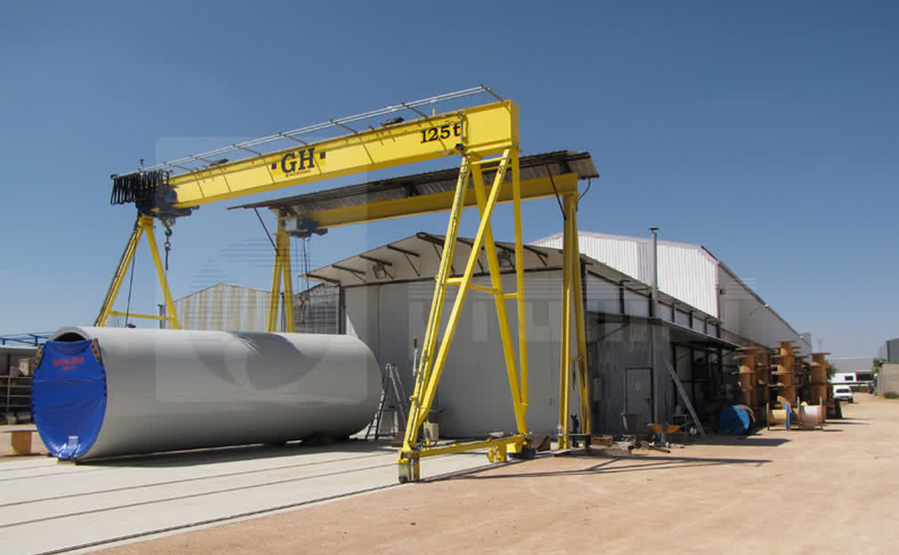

Trabajemos juntos
Contacte con PRAMAR
Si necesita equipos de tratamiento de aguas, montajes industriales o cualquier solución de ingeniería, contacte con nosotros. Estudiaremos su proyecto y le ofreceremos la mejor solución técnica.
Fundada en 1987 por profesionales del sector, PRAMAR es referencia en tratamiento de aguas y montajes industriales desde Tomelloso.

PRAMAR fue fundada en 1987 por jóvenes profesionales del sector industrial. Desde entonces, la empresa ha crecido hasta convertirse en un referente en el diseño, fabricación e instalación de equipos y plantas para el tratamiento de aguas residuales, industriales y potables.
Nuestra sede en Tomelloso (Ciudad Real) concentra toda la capacidad productiva: ingeniería, fabricación propia, montaje en obra y puesta en marcha. Este control integral de cada fase es lo que avala la calidad de nuestros proyectos.
PRAMAR abarca todo el proceso: ingeniería y diseño de equipos, fabricación en nuestras instalaciones, montaje en obra y puesta en marcha.
Estudio técnico del proyecto, dimensionamiento de equipos y elaboración de planos de fabricación.
producción integral en nuestras instalaciones de Tomelloso con control de calidad en cada fase.
Instalación en obra con nuestro propio equipo técnico y puesta en servicio supervisada.
más de tres decadas de trayectoria en el sector avalan la calidad de nuestro trabajo.
Control integral de cada fase del proceso, desde el diseño hasta la puesta en marcha.
Cumplimiento riguroso de plazos y compromisos con cada cliente.
Servicio postventa y atención continuada. Cada proyecto es una relación a largo plazo.
Nuestro prestigio en el mercado respalda cada equipo y cada instalación que entregamos.
Equipos robustos y duraderos, diseñados para funcionar con el mínimo mantenimiento.
Nuestro trabajo contribuye directamente a la protección del medio ambiente y los recursos hídricos.
inversión continua en investigación, desarrollo e innovación para mejorar nuestros equipos y procesos.
Nuestra actividad se desarrolla en múltiples sectores industriales y de infraestructuras.
depuración de aguas residuales urbanas e industriales, potabilización y desalación.
Plantas termosolares, cogeneración, instalaciones fotovoltaicas de autoconsumo.
calderería, construcciones metálicas, torres eólicas, pasarelas y depósitos.
Si necesita equipos de tratamiento de aguas, montajes industriales o cualquier solución de ingeniería, contacte con nosotros. Estudiaremos su proyecto y le ofreceremos la mejor solución técnica.